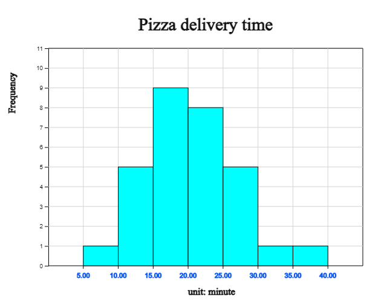
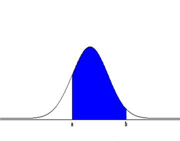
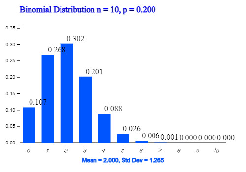
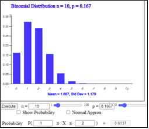
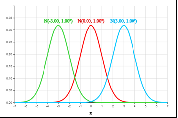
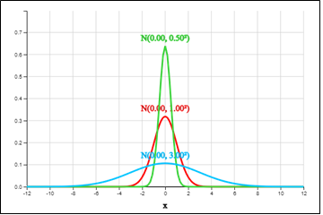

⭐ Think |
The sample space that can appear by tossing a coin twice is as follows:
|
üíé Explore |
Which probabilities of various events in the sample space is used a lot in real problem? |
Chapter 3. Random Variable and Probability Distribution
üéØ üé≤ üé∞ üéÆ3.1 Random Variable3.2 Probability Distribution of Discrete Random Variable |
Probability calculation for certain types of events is widely used in our daily lives. Let's discuss what is a random variable and how to calculate the probability of binomial distribution and normal distribution which are particularly commonly used. |
3.1 Random Variable
If there are only two possible outcomes in a trial, it is often observed around us to count the number of one outcome when the trial is repeated several times as follows:
- Select 10 products produced in a factory and inspect whether they are 'good' or 'defective' and count the number of defectives out of 10 products.
- Survey 10 voters whether they like or dislike a particular candidate in an election and count the number of voters who like the particular candidate.
Probabilities can be obtained for various events in the sample space, but what we are more interested in is the events for the number of heads and their probabilities such as tossing a coin two times as follows:
| Event of no head | [TT] | P({TT}) = \(\frac{1}{4}\) |
| Event of one head | {TH, HT} | P({TH, HT}) = \(\frac{2}{4}\) |
| Event of two heads | {HH} | P({HH}) = \(\frac{1}{4}\) |
If \(X\) is the number of heads of the coin, the possible number of \(X\) is 0, 1, and 2. In other words, \(X\) is one-to-one correspondence from each element in the sample space \(S\) to one number as follows:
| Sample space | \(X\) = Number of heads when tossing a coin two times |
|---|---|
| {TT} | 0 |
| {TH} {HT} | 1 |
| {HH | 2 |
The one-to-one relation in which a single real number is matched to each element in the sample space is called the random variable. Random variables are usually denoted with uppercase letters \(X, Y, Z \) ... and values of the random variables are denoted with lowercase letters \(x, y, z \) ... . When a random variable has finite values or countable numbers as a natural number, the random variable is called the discrete random variable, and when it has an arbitrary real value, the random variable is called the continuous random variable. For example, the number of heads that appear by tossing two coins is a discrete random variable, and the delivery time to home when we order a pizza is a continuous random variable because it can have any positive real value.
üé≤ Example 3.1
In the next experiments, distinguish whether the random variable \(X\) is a discrete random variable or a continuous random variable.
1) The number of car accidents \(X\) that occur per day at an intersection.
2) The height of our classmates \(X\)
Solution
1) The number of car accidents occurring at an intersection can be 0, 1, 2, 3, ...
Since it is a natural number, the number of car accidents \(X\) occurring at an intersection is a discrete random variable.
2) The height of our class students usually has an arbitrary real value within a certain range, so the height \(X\) is a continuous random variabl.
⏱ Practice 3.1
|
In the next experiments, distinguish whether the random variable \(X\) is a discrete random variable or a continuous random variable.
1) Number of typhoons \(X\) passing through Korea in a year |
3.2 Probability Distribution of Discrete Random Variable
⭐ Think |
When a coin is tossed twice, if \(X\) is the number of heads, the possible values of \(X\) is 0, 1, and 2. |
üíé Explore |
If we arrange all the probabilities for the possible numbers 0, 1, and 2 of \(X\) in a table, what does it look like? |
If the random variable \(X\) is the number of heads when a coin is tossed twice, the probability of event which has no head, P({TT}) = \(\frac{1}{4}\), can be written as \(P(X=0) = \frac{1}{4}\). Similarly, the probability of events which has one head, P({TH, HT}) = \(\frac{2}{4}\), as \(P(X=1) = \frac{2}{4}\), and the probability of event which has two heads, P({HH}) = \(\frac{1}{4}\)\(\frac{1}{4}\), as \(P(X=2) = \frac{1}{4}\). These probabilities can be summarized in a table as follows:
| Sample space | \(X\) = Number of heads | \(P(X=x)\) |
|---|---|---|
| {TT} | \(x = 0\) | \(\frac{1}{4}\) |
| {TH} {HT} |
\(x = 1\) | \(\frac{2}{4}\) |
| {HH} | \(x = 2\) | \(\frac{1}{4}\) |
The probability distribution of a discrete random variable \(X\) is a summary of probabilities that \(X\) has a certain value \(x\), \(P(X=x)\), as shown in this table. The above probability distribution can be expressed graphically as in <Figure 3.1>.

<Figure 3.1> robability distribution of a discrete random variable
In general, if a discrete random variable \(X\) can have values \(x_1 , x_2 , \cdots , x_n\) and their corresponding probabilities are \(p_1 , p_2 , \cdots , p_n\) respectively, it can be summarized as one-to-one relation as follows and it is called the probability distribution of \(X\).
| \(X\) | \(x_1\) | \(x_2\) | \(\cdots\) | \(x_n\) | Total |
|---|---|---|---|---|---|
| \(P(X=x_i )\) | \(p_1\) | \(p_2\) | \(\cdots\) | \(p_n\) | 1 |
It may also be represented as a mathematical function and it is called the probability density function of \(X\).
\(P(X=x_i ) = p_i ,\) \(\quad i=1,2,..., n\)
Among discrete random variables, the most widely used in reality is the binomial distribution, which will be studied in detail in Section 3.4.
According to the basic properties of probability, the probability distribution function has the following properties.
✨ Properties of probability distribution function
The probability distribution function \(P(X = x_i ) = p_i\) (\(i=1,2, ... , n\)) of a discrete random variable \(X\) has the following properties:
1) \( 0 \le p_i \le 1\)
2) \( p_1 + p_2 + \cdots + p_n = 1\)
2) \( p_1 + p_2 + \cdots + p_n = 1\)
The probability that a random variable \(X\) has a value between \(a\) and \(b\) is represented as \(P(a \le X \le b)\).
üé≤ Example 3.2
There are five products in one box, two of which are defective. We select two products out of this box and inspect them. Let \(X\) be the number of defective items selected.
1) Find the probability distribution of \(X\) and draw a graph using 『eStatH』
2) Find \(P(1 \le X \le 2)\).
Solution
1) \(X\) can have values 0, 1, 2 and their probabilities are as follows:
\(P(X = 0) = \frac{{}_3 C_2 × {}_2 C_0}{{}_5 C_2} = \frac{3}{10}\)
\(P(X = 1) = \frac{{}_3 C_1 × {}_2 C_1}{{}_5 C_2} = \frac{6}{10}\)
\(P(X = 2) = \frac{{}_3 C_0 × {}_2 C_2}{{}_5 C_2} = \frac{1}{10}\)
\(P(X = 1) = \frac{{}_3 C_1 × {}_2 C_1}{{}_5 C_2} = \frac{6}{10}\)
\(P(X = 2) = \frac{{}_3 C_0 × {}_2 C_2}{{}_5 C_2} = \frac{1}{10}\)
Therefore, the probability distribution of \(X\) is represented in a table as follows:
| \(X\) | 0 | 1 | 2 | Total |
|---|---|---|---|---|
| \(P(X=x)\) | \(\frac{3}{10}\) | \(\frac{6}{10}\) | \(\frac{1}{10}\) | 1 |
2) \(P(1 \le X \le 2) = P(X=1) + P(X=2) = \frac{6}{10} + \frac{1}{10} = \frac{7}{10}\)
[Discrete Distribution]
If you select 'Discrete Distribution' from 『eStatH』 menu, data input window such as in <Figure 3.2> appears. Enter the data here as shown in the figure and click [Execute] button to display the probability distribution graph as shown in <Figure 3.3>.
| x1 | x2 | x3 | x4 | x5 | x6 | x7 | x8 | x9 | ||
| X | Sum | |||||||||
| P( X = xi ) |
<Figure 3.2> Data input for a discrete distribution
| Mean E(X) = | Variance V(X) = | Standard Deviation σ(X) = |
<Figure 3.3> Graph of a discrete distribution using 『eStatH』
⏱ Practice 3.2
|
Let a random variable \(X\) be the number of heads when a coin is tossed three times. Find the probability distribution of \(X\) and draw a graph. |
A. Mean and standard deviation of a discrete random variable
⭐ Think |
If \(X\) = 'the number of heads' when a coin tossed twice, \(X\) can have values 0, 1, and 2 and their probabilities are \(\frac{1}{4}, \frac{2}{4}\) and \( \frac{1}{4}\) respectively. |
üíé Explore |
1) What would be a good representative value of \(X\)? 2) What would be a good measure of dispersion for possible values of \(X\)? |
The probability distribution of the random variable \(X\) = 'the number of heads' when a coin tossed twice is as follows:
| \(X\) | 0 | 1 | 2 | Total |
|---|---|---|---|---|
| \(P(X=x)\) | \(\frac{1}{4}\) | \(\frac{2}{4}\) | \(\frac{1}{4}\) | 1 |
This probability distribution is similar to the frequency table of three possible values 0, 1, and 2 with the relative frequency.
| Value | Frequency | Relative frequency |
|---|---|---|
| 0 | 1 | \(\frac{1}{4}\) |
| 1 | 2 | \(\frac{2}{4}\) |
| 2 | 1 | \(\frac{1}{4}\) |
| Total | 4 | 1 |
The mean \(\mu\) of these numbers 0, 1, 1, 2 and the variance \(\sigma^2\) are as follows:
Mean \(\qquad \mu = \frac{0+1+1+2}{4} = 0×\frac{1}{4} + 1×\frac{2}{4} + 2×\frac{1}{4} = 1\)
Variance \(\;\;\sigma^2 = \frac{(0-1)^2 +(1-1)^2 +(1-1)^2 +(2-1)^2}{4} \)
\(\qquad \qquad \quad \;= (0-1)^2 ×\frac{1}{4} + (1-1)^2 ×\frac{2}{4} + (2-1)^2 ×\frac{1}{4} = \frac{2}{4} = 0.51\)
Therefore, the standard deviation \(\sigma\) is \(\sqrt{0.5} = 0.707 \).
In general, if a discrete random variable \(X\) can have values as \(x_1 , x_2 , \cdots , x_n\) and their probabilities are \(p_1 , p_2 , \cdots , p_n\) respectively, then the probability distribution is as follows
| \(X\) | \(x_1\) | \(x_2\) | \(\cdots\) | \(x_n\) | Total |
|---|---|---|---|---|---|
| \(P(X=x_i )\) | \(p_1\) | \(p_2\) | \(\cdots\) | \(p_n\) | 1 |
The mean or expectation of the random variable \(X\) denoted as \(E(X)\) or \( \mu \), the variance denoted as \(V(X)\) or \(\sigma^2 \) and the standard deviation denoted as \(\sigma(X)\) or \(\sigma\) are calculated as follows:
\(E(X) = \mu = \sum_{i=1}^{n} x_i p_i\)
\(V(X) = \sigma^2 = \sum_{i=1}^{n} (x_i - \mu)^2 p_i\)
\(\sigma(X) = \sqrt{V(X)} \)
The mean or expectation of the random variable \(X\), \(E(X)\), which can have possible values \(x_1 , x_2 , ... , x_n \) with their probabilities \(p_1 , p_2 , ... , p_n \) can be considered as a weighted average of values using the weight of probabilities. The variance of \(X\), \(V(X)\), is a weighted average of all squared distances from the mean. The standard deviation of \(X\), \(\sigma(X)\), is an average distance from the mean.
üé≤ Example 3.3
Find the mean, variance and standard deviation of the probability distribution in [Example 3.2]. Check the result using 『eStatH』.
| \(X\) | 0 | 1 | 2 | Total |
|---|---|---|---|---|
| \(P(X=x)\) | \(\frac{3}{10}\) | \(\frac{6}{10}\) | \(\frac{1}{10}\) | 1 |
Solution
The mean, variance and standard deviation of the random variable \(X\) are as follows:
\(E(X) = 0×\frac{3}{10} + 1×\frac{6}{10} + 2×\frac{1}{10} = \frac{8}{10} = 0.8\)
\(V(X) = (0-0.8)^2 ×\frac{3}{10} + (1-0.8)^2 ×\frac{6}{10} + (2-0.8)^2 ×\frac{1}{10} = 0.36\)
\(\sigma(X) = \sqrt{V(X)} = \sqrt{0.36} = 0.6\)
The mean, variance, and standard deviation are consistent with the results of 『eStatH』 in <Figure 3.2>.
⏱ Practice 3.3 |
When a coin is tossed three times, find the probability distribution by setting the random variable as the number of heads. Find the mean, variance, and standard deviation of this probability distribution. |
If we expand the variance of a discrete random variable, \(V(X) = \sigma^2 = \sum_{i=1}^{n} (x_i - \mu)^2 p_i\), it becomes as follows:
\(V(X) = (x_{1} - \mu )^{2} p_{1} + (x_{2} - \mu )^{2} p_{2} + \cdots +(x_{n}- \mu )^{2} p_{n} \)
\( = (x_{1}^{2} p_{1} -2 \mu x_{1} p_{1} + \mu^{2} p_{i} )+(x_{2}^{2} p_{2} -2 \mu x_{2} p_{2} + \mu^{2} p_{2} )+ \cdots +(x_{n}^{2} p_{2} -2 \mu x_{n} p_{n} + \mu^{2} p_{n} ) \)
\( = (x_{1}^{2} p_{1} +x_{2}^{2} p_{2} + \cdots +x_{n} ^{2} p_{n} )-2 \mu (x_{1} p_{1} +x_{2} p_{2} + \cdots +x_{n} p_{n} )+ \mu^{2} (p_{1} +p_{2} + \cdots +p_{n} ) \)
\( = E(X^{2} )-2 \mu^{2} + \mu^{2} \)
\( = E(X^{2} )- \mu^{2} \)
\( = E(X^{2} )-E(X)^{2} \)
\( = (x_{1}^{2} p_{1} -2 \mu x_{1} p_{1} + \mu^{2} p_{i} )+(x_{2}^{2} p_{2} -2 \mu x_{2} p_{2} + \mu^{2} p_{2} )+ \cdots +(x_{n}^{2} p_{2} -2 \mu x_{n} p_{n} + \mu^{2} p_{n} ) \)
\( = (x_{1}^{2} p_{1} +x_{2}^{2} p_{2} + \cdots +x_{n} ^{2} p_{n} )-2 \mu (x_{1} p_{1} +x_{2} p_{2} + \cdots +x_{n} p_{n} )+ \mu^{2} (p_{1} +p_{2} + \cdots +p_{n} ) \)
\( = E(X^{2} )-2 \mu^{2} + \mu^{2} \)
\( = E(X^{2} )- \mu^{2} \)
\( = E(X^{2} )-E(X)^{2} \)
Therefore, the variance of a random variable \(X\) can be calculated using a short cut formula as follows:
\(V(X) = E(X^{2} )-E(X)^{2} \)
Using this short cut formula, the variance of [Example 3.3] can be calculated as follows:
\(V(X) = (0^{2} × \frac{3}{10} + 1^{2} ×\frac{6}{10} + 2^{2} ×\frac{1}{10} ) - (0.8)^2 = 0.36 \)
✨ Short cut formula of the variance of a discrete random variable \(X\)
If a discrete random variable \(X\) can have values \( x_1 , x_2 , ... , x_n \), their probabilities are \( p_1 , p_2 , ... , p_n \) respectively and \(E(X) = \mu \), then the variance of \(X\) can be calculated as folllows.
\(V(X) = E(X^{2} )-E(X)^{2} \)
\(\quad \quad \;\;= (x_{1}^{2} p_{1} +x_{2}^{2} p_{2} + \cdots +x_{n} ^{2} p_{n} )- \mu^2 \)
\(\quad \quad \;\;= (x_{1}^{2} p_{1} +x_{2}^{2} p_{2} + \cdots +x_{n} ^{2} p_{n} )- \mu^2 \)
üé≤ Example 3.4
When a dice is rolled, assume that the number of dots appeared is a random variable \(X\). Find the mean, variance, and standard deviation of \(X\). Draw a graph of the probability distribution using 『eStatH』 and check these values.Solution
The possible values of the random variable \(X\) are 1, 2, 3, 4, 5, 6 and the probability distribution of \(X\) is as follows:
| \(X\) | 1 | 2 | 3 | 4 | 5 | 6 | Total |
|---|---|---|---|---|---|---|---|
| \(P(X=x)\) | \(\frac{1}{6}\) | \(\frac{1}{6}\) | \(\frac{1}{6}\) | \(\frac{1}{6}\) | \(\frac{1}{6}\) | \(\frac{1}{6}\) | 1 |
The mean, variance using a short cut formula and standard deviation are as follows:
\(E(X) = 1×\frac{1}{6} + 2×\frac{1}{6}+ 3×\frac{1}{6}+ 4×\frac{1}{6}+ 5×\frac{1}{6}+ 6×\frac{1}{6} = \frac{21}{6} = 3.5\)
\(E(X^2 ) = 1^2 ×\frac{1}{6} + 2^2 ×\frac{1}{6} + 3^2 ×\frac{1}{6}+ 4^2 ×\frac{1}{6}+ 5^2 ×\frac{1}{6}+ 6^2 ×\frac{1}{6} = \frac{91}{6}\)
\(V(X) = E(X^{2} )-E(X)^{2} = \frac{91}{6} - 3.5^2 = \frac{35}{12} = 2.916\)
\(\sigma(X) = \sqrt{2.916} = 1.708\)
|
If you select 'Discrete Distribution' from 『eStatH』 menu and enter data as shown in <Figure 3.4>, the graph as shown in <Figure 3.5> and the mean, variance and standard deviation appear. A slightly different value originated from the computing error for the number of decimal places.
<Figure 3.4> Data input for a discrete distribution
<Figure 3.5> Discrete distribution with mean, variance and standard deviation
|

⏱ Practice 3.4 |
When a coin is tossed three times, find the probability distribution by setting the random variable \(X\) as the number of heads. Use 『eStatH』 to find the mean, variance, standard deviation and the graph of this probability distribution. |
B. Mean and standard deviation of \(a X + b\)
⭐ Think |
When a coin tossed twice, the random variable \(X\) = 'number of heads' can have values 0, 1, 2 and their probabilities are \(\frac{1}{4}, \frac{2}{4}, \frac{1}{4}\) respectively. |
üíé Explore |
1) If 100 dollars is paid for each head, how much value can be expected in this game and how is the variance of the prize money?
2) If 50 dollars is basically paid and 100 dollars is paid for each head, how much value can be expected in this game and how is the variance of the prize money?
|
If \(X\) = 'the number of heads' when a coin is tossed twice, the above game is the same as the problem to examine the probability distribution of 1) \(Y = 100X\) and 2) \(Z = 50 + 100X\). The probability distribution of the random variable \(X\) is as follows and \(E(X)\) = 1, \(V(X)\) = 0.5, \(\sigma(X)\) = 0.707.
| \(X\) | 0 | 1 | 2 | Total |
|---|---|---|---|---|
| \(P(X=x)\) | \(\frac{1}{4}\) | \(\frac{2}{4}\) | \(\frac{1}{4}\) | 1 |
1) The probability distribution of \(Y = 100X\) is as follows:
| \(Y = 100X\) | 0 | 100 | 200 | Total |
|---|---|---|---|---|
| \(P(Y = y)\) | \(\frac{1}{4}\) | \(\frac{2}{4}\) | \(\frac{1}{4}\) | 1 |
Therefore, the expectation \(E(Y)\), variance \(V(Y)\) and standard deviation \(\sigma(Y)\) are as follows:
\(E(Y) = 0×\frac{1}{4} + 100×\frac{2}{4} + 200×\frac{1}{4} = 100\)
\(V(Y) = (0-100)^2 ×\frac{1}{4} +(100-100)^2 ×\frac{2}{4} +(200-100)^2 ×\frac{1}{4} = \frac{20000}{4} = 5000 \)
\(\sigma(Y) = \sqrt{5000} = 70.7\)
That is, \(E(Y) = 100 E(X)\), \(V(Y) = 100^2 V(X)\), \(\sigma(Y) = 100 \sigma(X)\).
2) he probability distribution of \(Z = 50 + 100X\) is as follows:
| \(Z = 50 + 100X\) | 50 | 150 | 250 | Total |
|---|---|---|---|---|
| \(P(Y = y)\) | \(\frac{1}{4}\) | \(\frac{2}{4}\) | \(\frac{1}{4}\) | 1 |
Therefore, the expectation \(E(Z)\), variance \(V(Z)\), standard deviation \(\sigma(Z)\) are as follows:
\(E(Z) = 50×\frac{1}{4} + 150×\frac{2}{4} + 250×\frac{1}{4} = 150\)
\(V(Z) = (50-150)^2 ×\frac{1}{4} +(150-150)^2 ×\frac{2}{4} +(250-150)^2 ×\frac{1}{4} = \frac{20000}{4} = 5000 \)
\(\sigma(Z) = \sqrt{5000} = 70.7\)
That is, \(E(Z) = 50 + 100 E(X)\), \(V(Z) = 100^2 V(X)\), \(\sigma(Z) = 100 \sigma(X)\).
We noticed that if 50 is added to , the variance of \(Z\) is not affected, but if \(X\) is multiplied by 100, the variance of \(Z\) is increased by \(100^2\).
In general, assume that the probability distribution of a discrete random variable \(X\) is as follows and its mean, variance and standard deviation are \(E(X) = \mu\), \(V(X) = \sigma^2\), \(\sigma(X) = \sigma\) respectively.
| \(X\) | \(x_1\) | \(x_2\) | \(\cdots\) | \(x_n\) | Total |
|---|---|---|---|---|---|
| \(P(X=x )\) | \(p_1\) | \(p_2\) | \(\cdots\) | \(p_n\) | 1 |
The probability distribution of \(Y = aX + b\) is as follows:
| \(Y = aX + b\) | \(y_1 = ax_1 + b\) | \(y_2 = ax_2 + b\) | \(\cdots\) | \(y_n = ax_n + b\) | Total |
|---|---|---|---|---|---|
| \(P(Y=y )\) | \(p_1\) | \(p_2\) | \(\cdots\) | \(p_n\) | 1 |
Therefore, the expectation \(E(Y)\), variance \(V(Y)\) and standard deviation \(\sigma(Y)\) are as follows:
\(E(Y) = (ax_1 + b)p_1 + (ax_2 + b)p_2 + \cdots + (ax_n + b)p_n \)
\(\qquad \;= a(x_1 p_1 + x_2 p_2 + \cdots + x_n p_n ) + b(p_1 + p_2 + \cdots +p_n )\)
\(\qquad \;= a E(X) + b = a \mu + b\)
\(\qquad \;= a(x_1 p_1 + x_2 p_2 + \cdots + x_n p_n ) + b(p_1 + p_2 + \cdots +p_n )\)
\(\qquad \;= a E(X) + b = a \mu + b\)
\(V(Y) = [(ax_1 + b) - (a\mu + b)]^2 p_1 + [(ax_2 + b)-(a\mu +b)]^2 p_2 + \cdots + [(ax_n + b)-(a\mu + b)]^2 p_n \)
\(\qquad \;= a^2(x_1 - \mu)^2 p_1 +a^2(x_2 - \mu)^2 p_2 + \cdots + a^2(x_n - \mu)^2 p_n\)
\(\qquad \;= a^2 V(X) = a^2 \sigma^2\)
\(\sigma(Y) = \sqrt{V(Y)} = \sqrt{a^2 \sigma^2} = |a| \sigma \)
If the mean, variance, standardard deviation of a random variable \(X\) are \(E(X) = \mu\), \(V(X) = \sigma^2\), \(\sigma(X) = \sigma\) respectively, then the mean, variance and standard deviation of \(Y = aX + b\) are as follows:
\(E(Y) = a E(X) + b = a \mu + b\)
\(V(Y) = a^2 V(X) = a^2 \sigma^2\)
\(\sigma(Y) = \sqrt{a^2 \sigma(X)} = |a| \sigma \)
This is true even if \(X\) is a continuous random variable.
✨ Mean, variance and standard deviation of \(Y = aX + b\)
If \(X\) is a random variable and \( a, b \) are constants, the expectation variance and standard deviation of \(Y = aX + b\) are as follows:
\(E(Y) = a E(X) + b = a \mu + b\)
\(V(Y) = a^2 V(X) = a^2 \sigma^2\)
\(\sigma(Y) = \sqrt{a^2 \sigma(X)} = |a| \sigma \)
3.3 Probability Distribution of Continuous Random Variable
⭐ Think |
The delivery time to the house by ordering a pizza at a shop were examined 30 times is as follows:
[Data 3.1] Pizza delivery time to the house (unit: minute)
|
|
üíé Explore |
1) What is the probability that the pizza will be delivered between 10 and 20 minutes?
2) What is the probability that the pizza will be delivered between 15 and 20 minutes?
3) How to obtain the probability that pizza is delivered to a more detailed time interval?
|
Using 『Histogram – Frequency Table』 of 『eStatH』, the histogram of pizza delivery time is as <Figure 3.6> if the class interval starts at 0 and the interval size is 10 minutes. It can be seen that the probability that the pizza is delivered between 10 and 20 minutes is 0.47.
|
<Figure 3.6> Histogram of the pizza delivery times – interval size is 10 minutes
[Table 3.1] Frequency table of the pizza delivery times – interval size is 10 minutes
|
If the interval of the histogram starts at 5 and the interval size is 5 minutes, the histogram becomes as <Figure 3.7>. It can be seen that the probability in which the pizza will be delivered between 15 and 20 minutes is 0.30.
|

<Figure 3.7> Histogram of the pizza delivery times – interval size is 5 minutes
[Table 3.2] Frequency table of the pizza delivery times – interval size is 5 minutes
|
In order to obtain the probability of a more detailed interval, a more detailed histogram such as <Figure 3.8> and its frequency table are required as shown below. However, for such a histogram, more data must be collected, and it is cumbersome to redraw the histogram every time to calculate the desired probability.
<Figure 3.8> Histogram with detailed interval
There are many continuous data around us as the histogram above in which many data are located around the mean, data are symmetrical about the mean, and their shape looks like a bell. In order to easily find the probability for all of this type data, mathematicians searched for a function that can describe these kinds of histograms. This function has the same shape as in <Figure 3.9> and is called the normal distribution function. It is explained in detail in Section 3.5.
<Figure 3.9> Normal distribution function
If the probability distribution function of a continuous random variable can be expressed as a mathematical function \(f(x)\), it is possible to approximate the desired probability without finding a frequency table and histogram. In general, the probability distribution function \(f(x)\) of a continuous random variable \(X\) has the following properties.
✨ Properties of the probability distribution function \(f(x)\) of a continuous random variable \(X\).
1) \(f(x) \ge 0\)
2) The sum of the total probabilities should equal to 1.
That is, if the domain of the function \(f(x)\) is an interval [\(\alpha, \beta\)],
the area of the function \(f(x)\) on the domain should be 1 as follows:
\(P( \alpha \le X \le \beta) = \int_\alpha ^\beta f(x)dx = 1 \)
3) The probability that a continuous random variable \(X\) is in the
interval \([a,b]\), \(P(a \le x \le b)\), can be found as the definite integral
on the interval \([a,b]\) which is the area of \(f(x)\). (<Figure 3.10>)
\(P( a \le X \le b) = \int_a ^b f(x)dx \)

<Figure 3.10> The probability that a continuous random variable \(X\) is in the interval \([a,b]\)
üé≤ Example 3.5
Suppose the delivery time from ordering a pizza to its arrival home can be any time between 10 and 30 minutes. If \(X\) is the random variable of 'delivery time to home', find the probability distribution function of \(X\) and draw its graph. Find the probability that the delivery time is in between 15 and 20 minutes.Solution
Since \(X\) can be any number between 10 and 30, the probability distribution function is as follows: $$ \begin{align} f(x) &= \frac{1}{(30-10)}, 10 \le x \le 30\\ &= 0,\qquad elsewhere \\ \end{align} $$ It is called a uniform distribution and denoted as Uniform(10,30).
The probability of the delivery time in between 15 and 20 minutes is plotted as <Figure 3.11>, so the calculation of the probability (area) is (20-15) × (1/20) = 0.25.

<Figure 3.11> Calculation of \(P(15 \le X \le 20)\) in Uniform(10,30)
⏱ Practice 3.5
|
If the probability distribution function of a continuous random variable \(X\) is \(f(x) = 2x, (0 \le x \le 1)\), find the followings.
1) \(P(0 \le X \le \frac{1}{4})\) |
⏱ Practice 3.6
|
If the probability distribution function of a continuous random variable \(X\) is
\(f(x) = ax, (0 \le x \le 2)\), find the followings. (\(a\) is a constant)
1) constant \(a\) |
3.4 Binomial Distribution
⭐ Think |
It is said that the defect rate of products produced in one factory is 0.1. Consider a random variable which is the number of defective products when three products are inspected. |
üíé Explore |
What is the probability distribution function of the random variable \(X\)? |
When a product is inspected, if it is a good product, we denote it as G, and if it is a defective product, we denote it as B. When three products are inspected, possible events of the sample space, possible values of the random variable \(X\) which is the number of defective products and their probabilities are as follows:
| Sample space | \(X\) = Number of defectives | \(P(X=x)\) |
|---|---|---|
| GGG | 0 | \((0.9)^3\) |
| GGB GBG BGG |
1 | \(3 (0.1)(0.9)^2\) |
| GBB BGB BBG |
2 | \(3 (0.1)^2(0.9)\) |
| BBB | 3 | \( (0.1)^3\) |
When the number of defectives is 0, the number of cases is one which is from \({}_3 C_0\). When the number of defectives is 1, the number of cases is three which is from \({}_3 C_1\). When the number of defectives is 2, the number of cases is three which is from \({}_3 C_2\). When the number of defectives is 3, the number of cases is 1 which is from \({}_3 C_3\). Therefore the probability distribution function of the random variable \(X\) can be expressed as follows: $$ P(X=x) = {}_3 C_x (0.1)^x (0.9)^{3-x} \quad (x=0,1,2,3) $$ Similar examples as the above problem, which examines the number of defective products by inspecting the product, are observed frequently around us.
- Toss a coin five times to count the number of heads.
- Count the number of voters in favor of a particular candidate in an election.
Another example can be found at the following instrument as <Figure 3.12> in science museums. This instrument drops a ball from the top and, if the ball hit a bar, it may fall to the left (0 point) or to the right (1 point) with a half chance. Then the ball drops to the next stage bar again and may fall to the left and right with a half chance. We examine the distribution of scores after the second stage when 100 balls are dropped.
[Binomial Experiment]
| n = | 1 | 10 | p = | 0 | 1 | ||||
<Figure 3.12> Simulation of binomial distribution using 『eStatH』
What these examples have in common is that there are two possible outcomes of one trial
such as {good, defective}, {head, tail}, {approval, opposition}, etc and that
this trial is repeated several times. However, the probability of outcomes in each trial
is different. The trial with two possible outcomes ('binary') is called the
Bernoulli trial, and the outcome of interest among the two is often called
'success' and the rest is called 'failure'. When the Bernoulli trial with probability
of 'success' \(p\) is repeated \(n\) times independently, if \(X\) is the random variable
of counting the number of 'success', then \(X\) can have values 0, 1, 2, ... , \(n\) and
the probability distribution function of \(X\) is as follows:
$$
P(X = x) = {}_n C_x p^x (1-p)^{n-x} \quad (x=0,1,2, ... , n)
$$
This probability distribution is called the binomial distribution denoted as
\(B(n,p)\) and, if we denote \(q=1-p\), the binomial distribution can be expressed
as the following table.
| \(X\) | 0 | 1 | 2 | \(\cdots\) | \(x\) | \(\cdots\) | n | Total |
|---|---|---|---|---|---|---|---|---|
| \(P(X=x)\) | \({}_n C_0 q^n \) | \({}_n C_1 pq^{n-1}\) | \({}_n C_2 p^2 q^{n-2}\) | \(\cdots\) | \({}_n C_x p^x q^{n-x}\) | \(\cdots\) | \({}_n C_n p^n\) | 1 |
Each probability of this binomial distribution is equal to each coefficient of the terms in the expansion of the equation \((q+p)^n\) using the binomial theorem. $$ (q+p)^n = {}_n C_0 q^n + {}_n C_1 pq^{n-1}+ {}_n C_2 p^2 q^{n-2} + \cdots +{}_n C_x p^x q^{n-x}+ \cdots +{}_n C_n p^n $$ The following is a graph of the binomial distribution for various values of \(n\) and \(p\).
|
<Figure 3.13> Binomial distribution for various values of \(n\) and \(p\).
|

✨ Binomial Distribution
When the Bernoulli trial with probability of 'success' \(p\) is repeated \(n\) times independently, if \(X\) is the random variable of counting the number of 'success', then \(X\) can have values 0, 1, 2, ... , \(n\) and the probability distribution function of \(X\) is a binomial distribution \(B(n,p)\) as follows: $$ f(x) = {}_n C_x p^x (1-p)^{n-x} \quad (x=0,1,2, ... , n) $$
üé≤ Example 3.6
In this year baseball season, there are four more games for the team "Tiger" to play with the team "Bear". It is known that 'Tiger' team has a 60% chance of winning every game.
1) Let the random variable \(\small X\) be the number of games in which 'Tiger' wins among 4 games.
Suppose that there is no draw game. Find the probability distribution of \(\small X\).
2) Use 『eStatH』 to find this probability distribution.
Solution
1) Each game can be considered as a Bernoulli trial of 'Win' or 'Loss' and the trial is repeated four times. If 'Win' is denoted by O and 'Loss' is denoted by X, then there are \(2^4 = 16\) possible elements in the sample space as follows:
S = {'XXXX','OXXX','XOXX','XXOX','XXXO','OOXX','OXOX','OXXO',
'XOOX','XOXO','XXOO','OOOX','OOXO','OXOO','XOOO','XXXX'}
The probability that 'Tiger' will lose four times, {'XXXX'}, is (0.4)×(0.4)×(0.4)×(0.4) = \((0.4)^4\).
The probability that 'Tiger' will lose three times and win one time is
(0.6)×(0.4)×(0.4)×(0.4).
There are four cases of winning one time, {'OXXX', 'XOXX', 'XXOX', 'XXXO'} which are
the same number of cases in which O is seated in one when there are four seats.
So, the probability that 'Tiger' will win once is \({}_4 C_1\). Therefore, the total
probability of winning one game is as follows:
\({}_4 C_1 (0.6)(0.4)^3 \)
The probability that 'Tiger' will lose two times and win also two times is
(0.6)×(0.6)×(0.4)×(0.4).
There are six cases of winning two times,
{'OOXX', 'OXOX', 'OXXO', 'XOOX', 'XOXO', 'XXOO'} which are \({}_4 C_2\).
So the probability of winning two games is as follows:
\({}_4 C_2 (0.6)^2 (0.4)^2 \)
Similarly, the probability of winning three games is as follows:
\({}_4 C_3 (0.6)^3 (0.4) \)
The probability of winning four games is (0.6)×(0.6)×(0.6)×(0.6)
If we summarize, the probability distribution of the random variable \(X\) which is the number of games in which 'Tiger' wins is as follows:
| \(X\) | 0 | 1 | 2 | 3 | 4 | Total |
|---|---|---|---|---|---|---|
| \(P(X=x)\) | \({}_n C_0 (0.4)^4 \) | \({}_n C_1 (0.6)(0.4)^{3}\) | \({}_n C_2 (0.6)^2 (0.4)^{2}\) | \({}_n C_3 (0.6)^3 (0.4)^{1}\) | \({}_n C_4 (0.6)^4 \) | 1 |
2) Select 'Binomial Distribution' from the menu of 『eStatH』 and enter \(n\)= 4, \(p\)= 0.6. If you click [Execute] button, a binomial distribution graph such as <Figure 3.14> appears.
[Binomial Distribution]
| n = | 1 | 100 | p = | 0 | 1 |
⏱ Practice 3.7
|
The defect rate of an electronic component produced in one factory is 5%. Use 『eStatH』to find the following probabilities when there is a box containing 50 of these components.
1) What's the probability that there is no defective product? |
A. Mean and standard deviation of binomial distribution
If a Bernoulli trial with the probability of 'success' \(p\) and of 'failure' \(q=1-p\) is repeated three times, the random variable \(X\) which counts the number of 'success' is the following binomial distribution.
| \(X\) | 0 | 1 | 2 | 3 | Total |
|---|---|---|---|---|---|
| \(P(X=x)\) | \({}_3 C_0 \;q^3 \) | \({}_3 C_1 \;pq^{2}\) | \({}_3 C_2 \;p^2 q\) | \({}_3 C_3 \;p^3\) | 1 |
The random variable has the mean \(E(X)\), the variance \(V(X)\) and the standard deviation \(\sigma(X)\) as follows:
\(E(X) = 0×q^3 + 1×3pq^2 + 2×3p^2 q + 3×p^3 = 3p\)
\(V(X) = (0-3p)^2 ×q^3 + (1-3p)^2 ×3pq^2 + (2-3p)^2 ×3p^2 q + (3-3p)^2 ×p^3 = 3pq\)
\(\sigma(X) = \sqrt{3pq} \)
In general, if a random variable \(X\) follows the binomial distribution, \(B(n,p)\), then its probability distribution is as follows:
| \(X\) | 0 | 1 | 2 | \(\cdots\) | \(x\) | \(\cdots\) | n | Total |
|---|---|---|---|---|---|---|---|---|
| \(P(X=x)\) | \({}_n C_0 q^n \) | \({}_n C_1 pq^{n-1}\) | \({}_n C_2 p^2 q^{n-2}\) | \(\cdots\) | \({}_n C_x p^x q^{n-x}\) | \(\cdots\) | \({}_n C_n p^n\) | 1 |
The mean of \(X\) becomes \(E(X) = np\), the variance becomes \(V(X) = npq\), and the standard deviation becomes \(\sigma(X) = \sqrt{npq}\).
✨ Mean, variance, standard deviation of binomial distribution
If a random variable \(X\) follows binomial \(B(n,p)\),
\(E(X) = np\)
\(V(X) = npq\)
\(\sigma(X) = \sqrt{npq} \) ( \(q=1-p\))
üé≤ Example 3.7
The probability that a salesperson of an insurance company causes a customer to subscribe its insurance is 20% from past experience. A salesperson is scheduled to meet 10 customers this morning. Calculate the following probabilities and use 『eStatH』 to verify them.
1) What is the probability that three customers will subscribe the insurance?
2) What is the probability that two or more people (≥) will subscribe the insurance?
3) On average, how many people will subscribe the insurance? What is its standard deviation?
Solution
It is a binomial distribution with \(n\) = 10 and \(p\) = 0.2.
1) Probability that three customers will subscribe the insurance is as follows:
\( P(X=3) = {}_{10} C_3 (0.2)^3 (1-0.2)^{10-3} = 0.2013 \)
2) It is better to use the probability of complementary event to calcuate the probability that two or more people (≥) will subscribe the insurance as follows:
\( P(X ≥ 2) = 1 - P(X=0) - P(X=1) = 1 - {}_{10} C_0 (0.2)^0 (1-0.2)^{10-0} - {}_{10} C_1 (0.2)^1 (1-0.2)^{10-1} \)
\( = 1 - 0.1074 - 0.2684 = 0.6242 \)
\( = 1 - 0.1074 - 0.2684 = 0.6242 \)
3) It is as follows: \(q=1-p\)
\(E(X) = np = 10 × 0.2 = 2\)
\(V(X) = npq = 10 × 0.2 × 0.8 = 1.6 \)
\(\sigma(X) = \sqrt{1.6} = 1.265\)
|
Select 'Binomial Distribution' in the menu of 『eStatH』 and select \(n\) = 10, \(p\) = 0.2. If you click [Execute] button, the graph as in <Figure 3.16> appears. You can check the probability of 1) if you check the 'probability' here.  <Figure 3.16> Binomial distribution with \(n\)= 10, \(p\)= 0.2
You can check the answer of 2) \(P(X ≥ 2)\) = 0.6242 from the binomial table on the right hand side as follows:
|
⏱ Practice 3.8 |
In a presidential election, the approval rating of a particular candidate was 40%. In order to establish an election strategy, we will meet 20 voters this morning to see if they support the particular candidate. Calculate the following probabilities directly and check them using 『eStatH』. Assume that no person abstained.
1) What is the probability that 8 out of 20 will support the particular candidate? |
If the value of \(n\) is large, it is not easy to calculate the probability of the binomial distribution even using a calculator or computer. In 『eStatH』, you can find the binomial probability when \(n \le 100\). If \(n\) is more than 100, the probability can be approximated using a normal distribution with mean \(np\) and variance \(np(1-p)\). See details in Section 3.5.
B. Law of large number
⭐ Think |
Consider an experiment which rolls a dice \(n\) times in which the mathematical probability of each side is \(\frac{1}{6}\). If \(X\) is a random variable which counts the number of single dot on the upper side, \(X\) follows the binomial distribution \(B(n, \frac{1}{6})\). |
üíé Explore |
When you roll a dice \(n\) times, let's compare the relative frequency \(\frac{X}{n}\) with the mathematical probability \(\frac{1}{6}\). |
Using the binomial distribution, it can be seen that the mathematical probability of \(\frac{1}{6}\) is a reasonable model. When you roll a dice \(n\) times, the probability that the difference between the relative frequency, \(\frac{X}{n}\), and the mathematical probability, \(\frac{1}{6}\), is less than a small value \(\epsilon\) can be written as follows:
$$ \begin{align} P ( \left | \frac{X}{n} - \frac{1}{6} \right | < \epsilon ) &= P ( \epsilon < \frac{X}{n} - \frac{1}{6} < \epsilon ) \\ &= P ( \frac{1}{6} - \epsilon < \frac{X}{n} < \frac{1}{6} + \epsilon ) \\ &= P \left [ n( \frac{1}{6} - \epsilon )< X < n( \frac{1}{6} + \epsilon ) \right] \end{align} $$
If \(\epsilon\) = 0.1, the above formula becomes as follows: $$ P ( \left | \frac{X}{n} - \frac{1}{6} \right | < 0.1 ) = P \left [ n( \frac{1}{6} - 0.1 ) < X < n( \frac{1}{6} + 0.1 ) \right] $$ If the number of rolls \(n\) is 10, 20, 50, 100, then the above formula becomes as follows and its probability can be calculated using \(B(n, \frac{1}{6})\) in 『eStatH』.
|
\(n = 10\)
\(P \left [ 10( \frac{1}{6} - 0.1 ) < X < 10( \frac{1}{6} + 0.1 ) \right] \) |

<Figure 3.17> 『eStatH』 \(B(10,0.1667)\)
|
|
\(n = 20\)
\(P \left [ 20( \frac{1}{6} - 0.1 ) < X < 20( \frac{1}{6} + 0.1 ) \right] \) |

<Figure 3.18> 『eStatH』 \(B(20,0.1667)\)
|
|
\(n = 50\)
\(P \left [ 50( \frac{1}{6} - 0.1 ) < X < 50( \frac{1}{6} + 0.1 ) \right] \) |
<Figure 3.19> 『eStatH』 \(B(50,0.1667)\)
|
|
\(n = 100\)
\(P \left [ 100( \frac{1}{6} - 0.1 ) < X < 100( \frac{1}{6} + 0.1 ) \right] \) |

<Figure 3.20> 『eStatH』 \(B(100,0.1667)\)
|
As you noticed here, the probability \( P ( \left | \frac{X}{n} - \frac{1}{6} \right | < 0.1 )\) is close to 1 as \(n\) increases.
This result is true when \(\epsilon\) is smaller than 0.1 such as 0.01, 0.001, ... which means that the relative frequency \(\frac{X}{n}\) is close to the mathematical probability \(\frac{1}{6}\) if \(n\) is sufficiently large. This is called the law of large number.
✨ Law of large number
Consider a Bernoulli trial with 'success' probability of \(p\) and let a random variable \(X\) be the number of 'success' when the trial is repeated \(n\) times. Ther relative frequency \(\frac{X}{n}\) is close to \(p\) if \(n\) is sufficiently large.
<Figure 3.21> shows that \( P ( \left | \frac{X}{n} - \frac{1}{6} \right | < \epsilon )\) is close to 1 when \(\epsilon\) = 0.05 if \(n\) is increasing up to 1000 by using 『eStatH』. You can change \(p\) and \(\epsilon\) using the slide bars.
[]
\(X \; \) : \(B(n,p)\) \( \quad P(\; \left| \frac{X}{n} - p \right | \,<\, \epsilon ) \;ü†ñ\; 1 \)
| p = | 0 | 1 | ε = | 0.01 | 0.10 |
<Figure 3.21>Simulation experiment of law of large number using 『eStatH』
3.5 Normal Distribution
⭐ Think |
The histogram of delivery times to the house investigated randomly when pizza is ordered are as follows:
<Figure 3.22> Histogram using many data of pizza delivery time
|
üíé Explore |
1) What are the characteristics of this histogram? |

Among the data of continuous random variables around us, there are many data which have similar shape such as the histogram above. More data are concentrated near the mean, smaller data are located far from the mean, and data are symmetrical with respect to the mean. In order to find easily the probability of any interval on this shape of data, mathematicians found a function that can describe this shape of data. This mathematical function allows you to approximate the desired probability without finding a frequency table or histogram.
This function was first discovered by Abraham de Moivre (1667-1754), and then widely applied to physics and astronomy by German mathematician Karl Friedrich Gauss (1777-1855). This function is called the normal distribution function or the Gaussian distribution function, and the equation and graph are as follows:
| $$ f(x) = \frac{1}{\sqrt{ 2\pi} \sigma } e^{ \left[ - \frac{(x-\mu)^2}{2 \sigma^2} \right]} \qquad - ∞ < x < ∞ $$ where \(\mu\) is a constant, \(\sigma\) is a positive constant, \(e\) is the irrational number as |

<Figure 3.23> Probability distribution function of the normal distribution
|
The mean and standard deviation of the normal distribution are \(\mu\) and \(\sigma\) respectively. If a random variable \(X\) follows the normal distribution with the mean \(\mu\) and standard deviation \(\sigma\), that is the variance of \(\sigma^2\), it is denoted as \(N(\mu, \sigma^2 )\).
<Figure 3.24> is the graph of three normal distributions with different mean
and variance such as \(N(-2, 0.5^2 )\), \(N(0, 1)\) and \(N(2, 2^2 )\). It can be
observed that all of them are symmetrical around the mean. If the variance increases,
the normal distribution becomes flat and, if the variance decreases, the normal
distribution becomes sharp. This is because the total area under the normal distribution
function must be 1.
[ ]
| N ( | , | ² | ) | |||||
| -10 | 10 | 0.1 | 10 | |||||
| N ( | , | ² | ) | |||||
| -10 | 10 | 0.1 | 10 | |||||
| N ( | , | ² | ) | |||||
| -10 | 10 , | 0.1 | 10 | |||||
| [Reference] | Wikipedia | Wolfram | StatTrek | KhanAcademy |
<Figure 3.24> Comparison of three graphs of normal distribution, \(N(-2, 0.5^2 )\), \(N(0, 1)\), \(N(2, 2^2 )\)
<Figure 3.25> is the graph of three-normal distributions \(N(-3, 1)\), \(N(0, 1)\) and \(N(3, 1)\) in which the mean is different from each other and the variance is all 1. If the mean is different, the graph of the same shape is moved horizontally.
|

<Figure 3.25> Comparison of three graphs of normal distribution, \(N(-3, 1)\), \(N(0, 1)\), \(N(3, 1)\)
|
<Figure 3.26> is the graph of three-normal distributions \(N(0, 0.5^2 )\), \(N(0, 1)\) and \(N(0, 3^2 )\) in which all means are zero and variances are different. It can be observed that all of them are symmetrical around the average 0, and that the normal distribution becomes flat as the variance increases, and the normal distribution becomes sharp as the variance decreases.
|

<Figure 3.26> Comparison of three graphs of normal distribution, \(N(0, 0.5^2 )\), \(N(0, 1)\), \(N(0, 3^2 )\)
|
The characteristics of the normal distribution
1) It is a bell-shaped function symmetrical with respect to a straight line \(x = \mu\),
and the asymptote is the \(x\) axis. Therefore, the probabilities of the left
and right sides of the mean are 0.5 in each side.
2) When \(x = \mu\), the maximum value is \(\frac{1}{\sqrt{2 \pi} \sigma}\).
3) When the value of \(\sigma\) is constant, if the value of \(\mu\) is changed,
only the position of the symmetry axis changes and the shape of curve is the same.
4) When the value of \(\mu\) is constant, as the value of \(\sigma\) increases,
the curve becomes low and spreads widely, As the value of \(\sigma\) decreases,
the curve becomes higher and sharper.
5) The area between the graph \(y = f(x)\) and the \(x\) axis is 1.
A. Probability calculation of Normal distribution
The normal distribution is the most widely used distribution in reality, and it requires a lot of calculation of the probability of the interval \([a, b]\) of the random variable \(X\). As explained earlier, the probability of the interval \([a, b]\), \(P(a \le X \le b)\), when \(X\) follows the normal distribution \(N(\mu, \sigma^2 )\) is the area of the function \(f(x)\) enclosed between the x-axis and interval \([a, b]\)

<Figure 3.27> Probability \(P(a \le X \le b)\) of the normal distribution
Mathematically, this area should be obtained as the following definite integral, but it is only possible to use a computer because the function is impossible to integrate. $$ P(a \le X \le b) = \int_a ^b \frac{1}{\sqrt{ 2\pi} \sigma } exp \left[ - \frac{(x-\mu)^2} {2 \sigma^2} \right] dx $$ The probability of the interval \([\mu － \sigma, \mu + \sigma]\) calculated using the computer is 0.68, the probability of the interval \([\mu － 2 \sigma, \mu + 2 \sigma]\) is 0.95, and the probability of the interval \([\mu － 3 \sigma, \mu + 3 \sigma]\) is 0.997. That is, the normal distribution has most values around the mean, and there are few values that are more than three times the standard deviation to the left and right from the mean.
If a random variable \(X\) follows \(N(\mu, \sigma^2 )\), the transformed variable \(Z = \frac{X - \mu}{\sigma}\) follows a normal distribution with mean 0 and standard deviation 1, \(N(0,1)\). This fact implies that if we can find all probabilities of \(N(0,1)\), we can find the probabilities of any normal distribution. Therefore, \(N(0,1)\) is specifically called the standard normal distribution or \(Z\) distribution. The transformation \(Z = \frac{X - \mu}{\sigma}\) that turns a random variable \(X\) into \(Z\) is called the standardized transformation.
✨ Standardized transformation
If a random variable \(X\) follows a normal distribution with with mean \(\mu\) and variance \(\sigma^2\), \(N(\mu, \sigma^2 )\), the transformed variable \(Z = \frac{X - \mu}{\sigma}\) follows a normal distribution with mean 0 and standard deviation 1, \(N(0,1)\). The transformation is called the standardized transformation.
For the standard normal distribution \(N(0,1)\), a table is created by finding the probabilities from the left end to \(z\) for various real values \(z\), \(P(Z \le z)\), which is called the standard normal distribution table. The following table is a part of the standard normal distribution table obtained using 『eStatH』.
[Table 3.3] Cumulated probability of standard normal distribution in 『eStatH』
In 『eStatH』, it is easy to calculate the probability for the interval \([a, b]\) of any normal distribution, \(P(a \le X \le b)\), and the percentile \(x\) for a given cumulated probability \(p\), that is \(P(X \le x) = p\), as shown in <Figure 3.28>.
[Normal Distribution]
Mean μ= Std Dev σ=
<Figure 3.28> Normal probability calculation using 『eStatH』
In 『eStatH』, the probability of an interval can be calculated from \(\mu - 4 \sigma\) to \(\mu + 4 \sigma\). The probability which is less than \(\mu - 4\sigma\) or greater than \(\mu + 4\sigma\) is 0.0000. [Table 3.4] is the percentile table of the standard normal distribution of 『eStatH』.
[Table 3.4] Percentile of standard normal distribution in 『eStatH』
üé≤ Example 3.9
If \(Z\) is the standard normal random variable, find the following probabilities using the standard normal distribution table and confirm it using 『eStatH』.
1) \(P(Z ≤ 1.96)\)
2) \(P(-1.96 ≤ Z ≤ 1.96)\)
3) \(P(Z ≥ 1.96)\)
Solution
1) In the standard normal distribution table, you can look up \(P(Z ≤ 1.96)\) is 0.975.
2) \(P(-1.96 ≤ Z ≤ 1.96) = P(Z ≤ 1.96) - P(Z ≤ -1.96) = 0.975 - 0.025 = 0.95\)
3) \(P(Z ≥ 1.96) = 1 - P(Z ≤ 1.96) = 1 - 0.975 = 0.025 \)
|
When using 『eStatH』 for 1), select the second option under the graph, enter 1.96, and click [Execute] button. In the same way, 2) is calculated by entering -1.96 and 1.96 in the first option under the graph. 3) is calculated by selecting the third option under the graph and entering 1.96. |
üé≤ Example 3.10
If \(Z\) is the standard normal random variable, find \(x\) which satisfies the following formula and confirm it using 『eStatH』.
1) \(P(Z ≤ x) = 0.90\)
2) \(P(-x ≤ Z ≤ x) = 0.99\)
3) \(P(Z ≥ x) = 0.05 \)
Solution
1) In the standard normal distribution table, you can look up the value of \(x\) as 1.28 approximately.
2) The \(x\) in which both ends become 0.005 is 2.575.
3) It is the same as looking up \(P(Z ≤ x) = 0.95\), \(x\) is 1.645 in the table.
|
When using 『eStatH』 for 1) enter \(p\) = 0.90 in the right box in the fifth option under the graph and click [Execute] button. It can be seen that the correct 90% percentile is 1.282.
For 2) use the fourth option under the graph, enter \(p\) = 0.99 in the right box and click [Execute] button. It can be seen that the correct bilateral percentile are –2.5758 and 2.576. For 3) use the 6th option under the graph, enter \(p\) = 0.05 in the box on the right and click [Execute] button. It can be seen that the correct right 5% percentile is 1.645. |

⏱ Practice 3.9 |
If \(Z\) is the standard normal random variable, find the following probabilities using the standard normal distribution table and confirm it using 『eStatH』.
1) \(P(-1 ≤ Z ≤ 1)\) |
⏱ Practice 3.10 |
If \(Z\) is the standard normal random variable, find \(x\) which satisfies the following formula and cofirm it using 『eStatH』.
1) \(P(Z ≤ x) = 0.99 \) |
It is good to remember probabilities of some intervals in the standard normal distribution that are often used. <Figure 3.29> shows the percentiles of 95%, 97.5%, and 99.5% from the left of the standard normal distribution. <Figure 3.30> shows the 95% and 99% probabilities when both ends are equally excluded..

<Figure 3.29> 95%, 97.5%, 99.5% percentiles of standard normal distribution
\(\small P(Z \le 1.645) = 0.95, P(Z \le 1.96) = 0.975, P(Z \le 2.575) = 0.995\)
\(\small P(Z \le 1.645) = 0.95, P(Z \le 1.96) = 0.975, P(Z \le 2.575) = 0.995\)

<Figure 3.30> Middle 95%, 99% percentiles of standard normal distribution
\(\small P(-1.96 \le Z \le 1.96) = 0.95, P(-2.575 \le Z \le 2.575) = 0.99\)
\(\small P(-1.96 \le Z \le 1.96) = 0.95, P(-2.575 \le Z \le 2.575) = 0.99\)
Using the standard normal distribution table, you can find the probability of a general normal distribution. If \(X\) is the normal distribution with mean \(\mu\) and variance \(\sigma^2\), \(\frac{X-\mu}{\sigma}\) follows the standard normal distribution. Therefore, the probability of the interval \([a, b]\) of \(X\), \(P(a \le X \le b)\), is obtained by finding the probability of the interval \([\frac{a-\mu}{\sigma}, \frac{b-\mu}{\sigma}]\) from the standard normal distribution.
✨ Calculation of probability on interval \([a, b]\) in normal distribution
If the random variable \(X\) is the normal distribution with mean \(\mu\) and variance \(\sigma^2\), the probability of the interval \([a, b]\) of \(X\), \(P(a \le X \le b)\) is as follows: $$ P(a \le X \le b) = P(\frac{a-\mu}{\sigma} \le Z \le \frac{b-\mu}{\sigma} ) $$
üé≤ Example 3.11
Find the following probability when the midterm score of the Statistics course, \(X\), follows a normal distribution with a mean of 70 point and a standard deviation of 10 points. Check the calculated value using 『eStatH』.
1) \(P(X \le 94.3)\)
2) \(P(X \ge 57.7)\)
3) \(P(57.7 \le X \le 94.3)\)
Solution
The probability calculation of each question is as follows:
1) \( P(X \le 94.3) = P( \frac{X-70}{10} \le \frac{94.3-70}{10}) = P(Z \le 2.43) = 0.9925 \)
2) \( P(X \ge 57.7) = P( \frac{X-70}{10} \ge \frac{57.7-70}{10} ) = P(Z \ge -1.23) = 0.8907 \)
3) \( P(57.7 \le X \le 94.3) = P( \frac{57.7-70}{10} \le \frac{X-70}{10} \le \frac{94.3-70}{10} ) = P(-1.23 \le Z \le2.43)\)
\( = 0.8832 \)
\( = 0.8832 \)
|
To obtain the probability of a normal distribution using 『eStatH』, first enter the mean as 70 and the standard deviation as 10 on the screen of <Figure 3.31>. For 1) enter the value of 94.3 in the second option under the graph and click [Execute] button. In a similar way, for 2) enter 57.7 in the third option to calculate. For 3) enter the interval as [57.7, 94.3] in the first option and click [Execute] button.
<Figure 3.31> Calculation of probability in normal distribution
|

üé≤ Example 3.12
Find the following percentiles in [Example 3.11] and confirm the percentiles using 『eStatH』.
1) What is the 95% percentile of the midterm test scores?
2) What is the 95% percentile of excluding the both end sides of the midterm test scores?
Solution
1) The percentile \(z\) as \(P(Z \le z\) = 0.95 of the standard normal distribution is 1.645,
so the percentile of the normal distribution is 70 + 1.645 × 10 = 86.45.
2) Since the sum of the probabilities at both ends of the 95% percentile is 5%,
you need to first find the 97.5% percentile from the left end. Since the percentile
\(z\) as \(P(z \le Z \le z\) = 0.95 of the standard normal distribution is 1.960,
the 95% percentile of excluding the both end sides of the midterm test scores is
[70 – 1.96 × 10, 70 + 1.96 × 10], that is, [50.4, 89.6].
|
To obtain the percentile of a normal distribution using 『eStatH』, first enter the mean as 70 and the standard deviation as 10 on the screen of <Figure 3.32>. For 1) enter 0.95 in the right box of the fifth option under the graph and click [Execute] button, the 95% percentile 86.449 appears. For 2) enter 0.95 in the right box of the fourth option under the graph screen and click [Execute] button to display both 95% percentiles [50.400, 89.600].
<Figure 3.32> Calculation of percentile in normal distribution
|
⏱ Practice 3.11 |
It is said that the weight of melons follows a normal distribution with a mean of 250g and a standard deviation of 12g. Find the following probabilities and check the calculation using 『eStatH』.
1) Find the probability that the weight of the melon is less than 260g. |
B. Approximation of Binomial distribution using Normal distribution
If \(n\) is large (about 50 or more) in case of the binomial distribution, \(B(n,p)\), the probability calculation cannot be obtained even by using 『eStatH』. In this case, the binomial distribution can be approximated using a normal distribution with the mean \(np\), variance \(np(1-p)\). <Figure 3.33> is a graph obtained by approximating the binomial distribution with \(n\) = 50, \(p\) = 0.5 using the normal distribution with the mean \(np=50 \times 0.5 = 25\) and variance \(np=50 \times 0.5 \times 0.5 = 12.5\).
|
<Figure 3.33> Normal approximation of binomial when \(n\) = 50, \(p\) = 0.5
|
üé≤ Example 3.13
It is said that the defective rate of products produced in one factory is 5%. When 100 products were sampled on a day, find the followings.
1) What is the probability that there are less than 2 defective products?
2) What is the probability of 3 to 7 defective products?
Solution
If \(X\) is the number of defective products, then \(X\) is a binomial distribution with \(n\) = 100 and \(p\) = 0.05. In this case, \(n\) is large and the probability can be approximated using the normal distribution. Since the mean of this binomial distribution is \(np\) = 100×0.05 = 5, and the variance is \(np(1-p)\) = 100×0.05×(1-0.05) = 4.75, the probability calculation using the normal distribution \(N(5,4.75)\) is as follows:
1) \(P(X \le 2) = P(Z \le \frac{2-5}{\sqrt {4.75}} ) = P(Z \le 1.376) = 0.0845\)
2) \(P(3 \le X \le 7) = P( \frac{3-5}{\sqrt {4.75}} \le Z \le \frac{7-5}{\sqrt {4.75}} ) = P(-0.918 \le Z \le 0.918) = 0.642\)
|
⏱ Practice 3.12 |
In one presidential election, a particular candidate's approval rating was found to be 40%.
To develop an election strategy, we will meet with 100 voters today to see if they support
the particular candidate. Find the following probability and check it using 『eStatH』.
Assume that there is no abstention.
1) What is the probability that 40 or more (≥) and less than (≤) 50 out of 100 voters will support it? |
Exercise
*** Select an answer and click [SUBMIT] button.
3.1 Which one is an appropriate function as a probability distribution function?
3.2 Which one is not the property of a probability distribution function?
3.3 If a random variable \(X\) has values 0, 1, 2, 3 and its probability distribution function is f(x) = \(\frac{x}{6}\), what is the mean of the random variable \(X\)?
3.4 If a continuous random variable \(X\) has the probability distribution function \(f(x)\) and it is defined on all real number, which one of the followings is not correct?
3.5 If a probability distribution function of a random variable \(X\) is as follows, what are the mean \(E(X)\) and standard deviation \(σ(X)\)?
| \(X\) | 0 | 1 | 2 | Total |
|---|---|---|---|---|
| \(P(X=x)\) | \(\frac{3}{10}\) | \(\frac{6}{10}\) | \(\frac{1}{10}\) | 1 |
3.6 Let the random variable X be the number of dots, 1, 2, ... , 6, which are appeared on the top when you roll a dice. Find the mean of the random variable \(X\).
3.7 Let the random variable \(X\) be the number of dots when you roll a dice. What is the expected value of the squared value of each \(X\)?
3.8 If a random variable X has \(E(X)\)=5 and \(E(X^2)\)=25, what is the variance of \(X\), \(V(X)\)?
3.9 If a random variable \(X\) is multiplied by 5 for each value of \(X\), the standard deviation becomes what?
3.10 Midterm scores of a math class have the mean 24 and standard deviation 3. If each midterm score is multiplied by 2 and add 10 points, what are the mean and standard deviation of the new midterm scores?
3.11 If a random variable \(X\) has the mean of 20, what is the mean of \(Y=2X+3\)?
3.12 If a random variable \(X\) has the variance of 2, what is the variance of \(Y=2X+3\)?
3.13 Which one the followings is wrong?
3.14 What is the mean and variance of binomial distribution \(B(100, \frac{1}{6})\)?
3.15 What is the variance of the binomial distribution which has the distribution function as \(f(x) = {}_4 C_x (0.2)^x (1-0.2)^{4-x}\)?
3.16 There are 10 multiple choice questions where there is one correct answer among four possible answers. If a person chooses one answer randomly in each question, what is the probability that he would choose four correct answers?
3.17 If a normal distribution has the mean and standard deviation , what is the probability of the interval \(\mu ± 3 \sigma \)?
3.18 The entrance examination scores of a company follows a normal distribution with the mean 400 and standard deviation 50. What is the probability that a score belongs to the interval between 450 and 500 ?